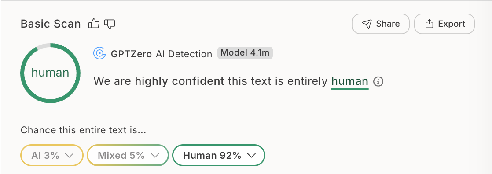
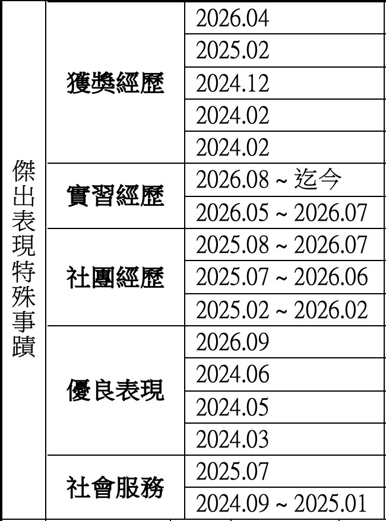
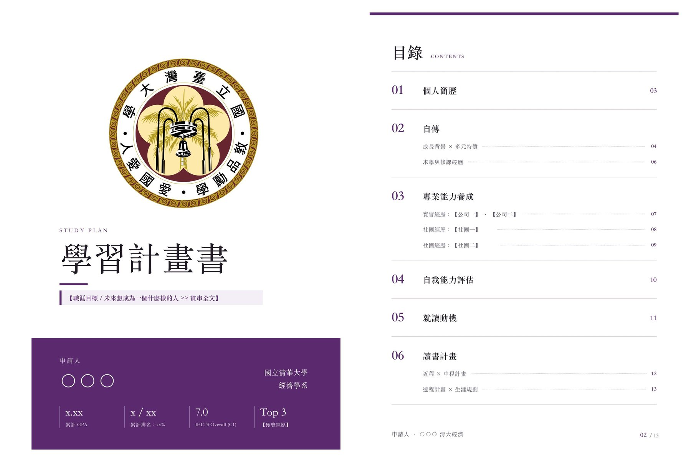

首頁 / 書審
書審
取書審分數前 66 名進口試。口試時教授手上會有個人資料表，國企所需另準備兩份成績單正本。
01前言
書審無用論？
我同意校名+%數很重要。但並非絕對，充其量只是獲得一個讓教授點開這份書審資料的機會。優秀的人很多，前 2% 落榜的也不少。我過去轉學和推甄時的成績、經歷都不算亮眼，所以更能感受到好好寫書審的重要性。
過去這三年都努力的撐過去了，不就是為了推甄提早上岸，那就不要留遺憾，當作是最後一哩路吧，共勉之。
AI 使用
我認為 AI 的語句跟用詞很明顯，教授也懂的都懂。善用 AI 是必要的，但要拿捏好分寸，AI 替我做的三件事：
- 架構：我會先把架構搭好，丟給 AI 檢查故事線是否通順、邏輯鏈是否矛盾，並討論優化方向。
- 潤稿：口說和文書在語句、用詞、甚至架構都有所差異，我會貨比三家，並反覆品味。
- 排版：拿做簡報的 skill 給 Claude，再依篇幅長短、版面配置方式迭代更新。

02個人資料表
整包申請中最重要的一項，我是學習計劃書完成才回來寫。書審階段要精心打磨，口試時要能侃侃而談。
一、揚長避短
- 盡可能展現自己優勢中相對強勢的部分、避免過多著墨於優勢中的劣勢。
eg. 多益 860-895 > 金色，900+ > 直接寫分數 - 口試時，教授勢必會在其中挑 1-2 題來問，其中社團經歷更是考古題中的常客，建議花點心思準備。
二、視覺化
- 將欄位以表格的形式呈現，展現資訊呈現的功力，也能突顯個人的亮點。
- 商研所限制較多，有既定的格式、書寫要求（僅能列點說明）；國企所雖限 1 頁但有更大排版彈性，可以在欄位內自由運用。
不過，我認為最重要還是展現個人故事線。我自己不到 900 分但還是放了分數，因為我想展現我後來我的英文能力是有成長的（雅思），事實上也真的在口試被問到。當然這沒有一個放諸四海的標準，就看個人選擇。


03學習計畫書
圍繞著兩條故事線：我現在是一個什麼樣的人，以及我未來的發展方向是什麼。
而為了達成這個目標，我過去付出了哪些行動、成果如何、又對我帶來了哪些影響。
一、封面、目錄、簡歷
1. 封面、目錄｜
見仁見智，可做可不做。若要做封面就得好好設計，畢竟是第一頁。封面我是放了 1–2 句話點出我的兩條故事線（我是誰、我想做啥），搭配 3–4 組數據（GPA、排名、獎項、檢定成績）。由於我的故事線不適合把動機寫在書審資料的前半段，因此有做目錄讓對動機比較感興趣的教授可以直接跳轉。
2. 個人簡歷｜
再次提及書審的兩條故事線（同封面），感覺放 CV 怪怪的，還是參考排版客製化了一份。


二、自傳、求學經歷
成長背景簡單帶過，把區塊獨立出來，它的功能是銜接：我是如何建立起以下這些特質的
要寫好個人特質真是門學問。我的原則不花篇幅描述這個特質，取而代之的是透過社團、實習等具體事蹟，讓教授感受到我確實有ＯＯ特質。最後再把這些特質收束成我在團隊中、在未來職涯中會是什麼樣的人。
至於要選哪些特質，可以參考系所官網，不外乎領導力、溝通能力、團隊合作等（至少要挑 1–2 個寫）

求學經歷三段
- 為什麼讀ＯＯ科系、當時的目標是什麼
- 職涯方向的轉變 / 探索
- 現在（未來）想發展的領域是......
修課經歷兩段
- 過去：大學的三年是如何規劃（修了什麼課、課外活動、交換）、成績如何、修課領域分佈。
- 未來：如何連結到ＯＯ所、ＯＯ所能給我什麼效益。

三、專業能力養成Anything: 實習、社團、競賽、專案、專題等
都強烈建議善用表格、STAR 法則，其中 S&T 可以儘量壓縮，篇幅留給 Action 和 Result。
- S：用 2–3 行交代專案的背景：專案的目標是什麼，我的職責 / 任務又是什麼。
- T：將最終目標拆成 2-3 個欲達成的任務。
- A：根據 T 的區塊逐點說明如何達成、付出了哪些行動。
- R：以圖表和數據呈現：impact 多大、相比過去提升多少、其中有多少比例是我貢獻的

四、自我能力評估回答為什麼我適合讀臺大ＯＯ所
值得注意的是 SWOT 的比較對象是其他申請者，所以 W 寫的是背景上必然存在的劣勢（例如相較商管、工工背景），應不至於造成嚴重扣分；而不是寫「英文不好」這種扣分缺點。TOWS 則接著說明你可以如何發揮優勢、又該如何應對這項劣勢。
去年不太知道這邊該怎麼寫，因此有去請教業師的意見。討論過後我選擇用 SWOT＋TOWS 分析，非常不推薦雷達圖，因為這些能力無法被量化、更無法相互比較。
五、就讀動機由於我是經濟系的，我分為需求、供給、機會成本三點來寫
- 需求：重申我未來發展的方向 >> 所以我需要讀研究所，而且是ＯＯ所。
- 供給：ＯＯ所在課程、師資、學校 / 學院資源三方面能怎麼幫我。
- 機會成本：對我來說讀碩班的機會成本是就業，本段說明我為什麼不直接進入職場，最後收束到「貴所會是最適合我的下家」。

六、讀書計劃
去年推甄商研所提到的近程計畫全部達成，我想這也是我有底氣在口試時不打自招的原因。讀書計劃可以拆分為以下四個部分。
- 現在 ~ 研究所：我認為相較於寫「想做什麼」，更有說服力的是說明正在做什麼、可以達成什麼目的。
- 研究所階段：(a) 修課：近 2-3 年實際有開的課（系網不太準，很多都沒開了）；(b) 課外：實習 / 競賽 / 社團 / 專案 / 社會服務。
- 未來 3–5 年與 10 年：短期、長期進入什麼產業、做些什麼，最後幫自己的第一條故事線（未來目標）收尾。
- 生涯規劃：替另一條故事線收尾。搭配圖片說明自己過去已經透過哪些經歷實踐，並說明未來會用什麼形式繼續完成這個目標。

04其他有利審查資料
整理中。
05書審心得精選
整理中。https://www.dcard.tw/f/job/p/261747165